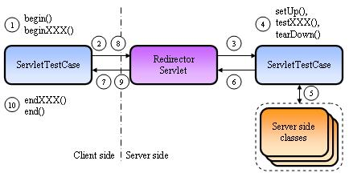

Click here for a UML sequence diagram.

TestCase classes that extends the
JUnit Testcase and it also provides several kind of
redirectors (Servlet Redirector, JSP Redirector, ...). The diagram
above is a generic diagram which serves to explain the principles.
You'll find details for a specific redirector proxy in the next
section.
Let's go through the different steps to understand how it works. Here
is what happens for each testXXX() method in your
test case class (derived from YYYTestCase):
YYYTestCase.runTest()
method. This method first looks for a
begin(WebRequest)
method and executes it if found. Note that this method is called
before each test. The WebRequest parameter passed to
the beginXXX() method is used to set the HTTP headers,
the HTTP parameters, ... that will be sent in step 2 to the Redirector
proxy. The runTest() method then looks for a
beginXXX(WebRequest)
method and executes it if
found.
YYYTestCase.runTest() method then opens an HTTP
connection to the Redirector proxy. All the parameters set up
in the beginXXX() method are sent in the HTTP request
(HTTP headers, HTTP parameters, ...)
begin(), beginXXX(),
endXXX()
and end() methods (see
steps 1 and 8) and the server side instance is used for executing
the testXXX() methods (see step 4). The Redirector
proxy does the following:
YYYTestCase). These implicit objects
depend on the redirector proxy (see next section).
HttpServletRequest, ServletConfig,
ServletContext, ...). This is to be able to
to override some methods in order to return simulated values.
For example, the Cactus framework can simulate an URI (i.e.
act as if this URI was called instead of the Redirector proxy
URI). Thus, the getServerName(),
getServerPort(),
getRequestURI(), ... methods return values based
on the simulated URI (if there is any defined by the user).
WebRequest.setAutomaticSession(boolean)
code in the beginXXX() method. By default a session
is always created) and the redirector fills by reflection the
session
implicit object.
setUp(),
testXXX()
and tearDown() methods of your test class are executed
(in that order). They are called by the Redirector proxy using
reflection. Of course, setUp() and
tearDown()
are optional (same as in JUnit).
testXXX() method calls your server
side code to test, executing the test and using the JUnit assert API
to assert the result (assert(),
assertEquals(), fail(), ...)
testXXX() methods
throws exceptions which are caught by the Redirector proxy.
YYYTestCase.runTest()
method looks for an
endXXX(org.apache.cactus.WebResponse)
or endXXX(com.meterware.httpunit.WebResponse) method (this
signature is used for HttpUnit
integration) and executes it if found. At this stage,
you have the opportunity to check returned HTTP headers, Cookies and
the servlet output stream in the endXXX() method, again
using JUnit asserts and helper utility classes provided by Cactus.
Then the runTest() methods looks for an
end(org.apache.cactus.WebResponse)
or
end(com.meterware.httpunit.WebResponse)
method and calls
it if found. This end() method is called after each test.
Cactus provides 3 implementations of Redirector Proxies (see the TestCase Howto tutorial for more details on how to use these redirectors):
HttpServletRequest, ...)
PageContext, ...). The JSP
Redirector should be used to unit test custom Tag libraries.
FilterConfig, ...).

The client side opens 2 HTTP connections to the Servlet redirector.
Once to execute the tests and retrieve the servlet output stream and
a second time to get the test result. This is to be able to get
the exception data (message, stack trace, ...) if the test failed.
The test results are stored in a variable which is put in the
ServletContext
and then retrieved on the second HTTP
connection.

The client side opens 2 HTTP connections to the JSP redirector.
Once to execute the tests and retrieve the servlet output stream and
a second time to get the test result. This is to be able to get
the exception data (message, stack trace, ...) if the test failed.
The test results are stored in a variable which is put in the
ServletContext
and then retrieved on the second HTTP
connection.
The client side opens 2 HTTP connections to the Filter redirector.
Once to execute the tests and retrieve the servlet output stream and
a second time to get the test result. This is to be able to get
the exception data (message, stack trace, ...) if the test failed.
The test results are stored in a variable which is put in the
ServletContext
and then retrieved on the second HTTP
connection.